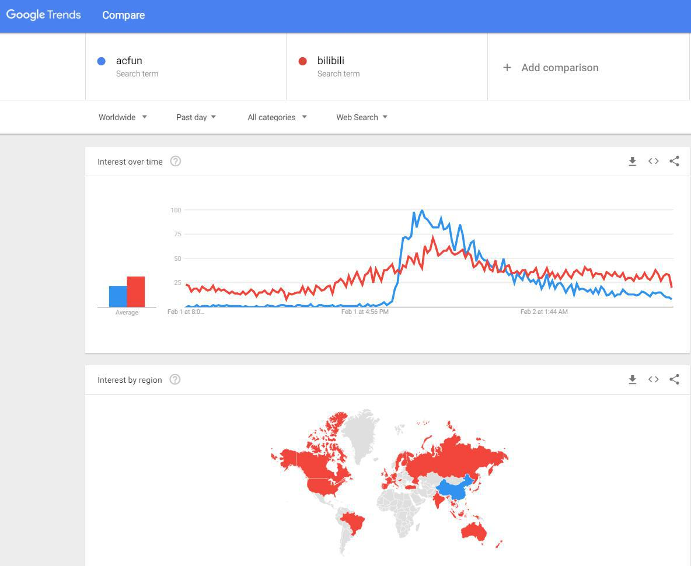

图例及说明
公告
广告
更新
早些时候消息
公告类消息在此区域置顶。新消息在下方区域持续更新。
这里是召唤Acer的广告 @ 2018.02.02 12:16:08
AcFun趋势娘官方水群：453193280（一群424671026已满）。
你不是一个人在战斗！（趋势一代目、趋势娘总监、AC娘声优辰音奈奈、A岛岛主ATM、AC周边游戏制作零堡都在里面）
趋势娘公告 @ 2018.02.02 11:59:50
趋势团队正与AcFun猴山和A岛保持密切沟通。我们会在这里放上第一手资讯。请大家收藏或记住这个地址：acfun.io
趋势团队通报 @ 2018.02.03 00:21:12
公告：我们发现本域名被腾讯管家误报为危险网站，已经向其提交申诉。在此期间，如果你使用QQ，请大家直接在浏览器中输入acfun.io访问本域名
趋势群Acer成员分布 @ 2018.02.05 03:59:04
一群2000人：女10%，男88%，未知2%；00后20%，90后59%，80后10%
二群0702人：女09%，男88%，未知3%；00后20%，90后59%，80后10%
更新 @ 2018.02.05 03:32:53
根据趋势猴的核实，A站依然有一台位于上海的服务器能够ping通，但无法访问网页内容。
数据包: 已发送 = 3，已接收 = 3，丢失 = 0 (0% 丢失)
猴山内部更新 @ 2018.02.05 01:50:37
根据很抱歉，应消息源请求，消息被撤回。
公告 @ 2018.02.04 20:46:49
我们与AcFun Mayday（紧急信号）的站长取得了联系。他们正在用技术手段发掘有价值的线索。欢迎大家去顶部连接访问他们的页面。
公告 @ 2018.02.04 16:12:23
趋势猴与斗鱼内部不愿透露姓名的高层进行了一小时的交谈，就近日以来的多个热点事件（包括刚刚发生的直播间事件）交换意见。我们希望各方面保持冷静理智，为事态向好的方面发展作出努力。
澄清 @ 2018.02.04 16:09:56
趋势猴原话是“因为今天不上班，所以最快也要等到明天才可能有新消息。”（是废话）希望大家不要误传。
A岛近期流量分析 @ 2018.02.04 07:51:10
根据A岛使用的whos.amung.us流量
分析统计显示，A岛的来访用户来源中，62%为acfun.io，21%为百度。（注：用户直接在浏览器中输入A岛地址访问的，不计入来源统计。）访问人群中，91%在中国，3%在美国，2%在日本。
趋势猴关于A站周边网站及项目的汇报 @ 2018.02.04 06:41:41
我们现已与A岛岛主、AC大逃杀作者、名字站站长、BoomFun站长（邮件）、AC周边游戏工作室负责人、微博⑨课课长、AC贴吧吧主们、趋势娘贴吧吧主取得联系。
我们已经达成紧急时刻抱团取暖的共识，互加友链，互相宣传。欢迎各位去本页顶部访问他们的站点/链接。
也拜托各位Acer将acfun.io分享给你们的Acer朋友们，身处寒夜，我们一起抱团取暖。
AC官博娘点赞求转运 @ 2018.02.04 06:38:12
新浪微博显示，@AcFun弹幕视频网（官博链接见页面顶部）于本消息发布6小时前点赞了@王尼玛 于2月1日发布的微博：“这是一只招财猫，点赞转发后二月有好运~[图片]”。
A岛遭受短暂攻击，现已恢复 @ 2018.02.03 16:47:12
刚刚，A岛（链接见页面顶部）遭受不明DDOS攻击，随后被技术人员证实恢复。值得注意的是，有传言说“B站前2小时也被攻击了”。
A站新发现 @ 2018.02.03 16:40:00
AcFun群友头大如菇提供信息，由趋势猴
查询Whois核实，AcFun主域名acfun.com于2018年2月2日进行续费，过期时间延期至2019年2月8日。
周边更新 @ 2018.02.03 15:20:49
我们与acfun名字站站长取得了联系，也有热心Acer向我们提供Boomfun站点，该站点长期关注acfun的服务器连通情况。欢迎大家去这两个站上（在顶部有链接）查询A站更多讯息。
澄清 @ 2018.02.03 12:08:12
网传AC知乎官方账号发表“2018年 AcFun春晚预告片来啦！”，其实是
21天前发布的。不过根据本页底部AC春晚群的公告，今年春晚依然正在如常制作。
趋势娘官方水群一群（424671026）统计 @ 2018.02.03 11:31:55
女11% 男87% 还有2%的未知（34人） 嗯？？？？？？
A站官方微博回复@毒奶色（黄旭东） @ 2018.02.03 09:59:07
“我是不是还能再挣扎一下[悲伤] 我一定要亲手为大佬加上认证，如果还有以后的话......”
腾讯新闻早报推送：A站无法访问 @ 2018.02.03 09:40:22
腾讯新闻早报引述澎湃新闻称，A站无法访问。（登报了……）
微博 @毒奶色（黄旭东）发表微博 @ 2018.02.03 03:59:00
“a站已死，有事烧纸”。欲知老仙毒奶效果如何，且看下回分解（大雾
微博 @Harvey科技 发表微博 @ 2018.02.03 02:16:00
B站年会现场出现名为“AC在，爱一直在”的WiFi热点
趋势娘 @ 2018.02.03 01:42:26
民那早点睡觉啦，别修仙啦，身体最要紧！明天早上起来再看更新吧。身处寒夜，把握星光，晚安。
来自猴山的综合消息 @ 2018.02.03 01:41:00
据多名猴山猴子透露，昨天很多猴子选择了调休，但猴山依然是正常上班状态。在家的猴子中也有选择继续在家工作的。此外据悉，A站高层依然处于在职状态。
补更 @ 2018.02.03 00:43:47
根据早些时候
腾讯新闻报导，A站本次无法访问的开始时间大致为2018.02.02 10:30:00
澄清 @ 2018.02.03 00:39:31
网传“川普表示A站别慌我在这里”是假图，可以通过川普发言制作器制作……虽然我知道你们都是开玩喜的但万一有人真信了怎么办呢……
补更 @ 2018.02.03 00:27:55
AcFun著名编曲调和液与“AC娘的重生”词曲作者文化露聊天时表示（感谢微博⑨课DJ指正），“我觉得A站要能再起来，咱可以写一首二次重生了”。
更新 @ 2018.02.03 00:07:33
根据
谷歌趋势全球数据（时间范围选Past day），“acfun”搜索热度在昨日短暂超过“bilibili”
上图中，蓝色为AcFun搜索热度，红色为Bilibili搜索热度。第一部分为搜索热度折线图，第二部分为地区搜索热度图。
更新 @ 2018.02.02 23:59:17
根据
百度指数（时间范围选24h），“acfun”搜索热度或为2012年以来第一次超过“bilibili”
更新 @ 2018.02.02 23:52:23
www.acfun.tv域名无法解析。之前域名对应页面为重定向至www.acfun.cn页面。
澄清 @ 2018.02.02 23:34:12
网传“A站将通过增发新股的方式进行融资，具体方案是增发2.5亿股新股”文章其实是旧闻：
阿里云锋入股恐生变，A站再临生死劫
趋势猴推荐阅读 @ 2018.02.02 15:41:20
趋势娘 @ 2018.02.02 15:38:01
阿里云官方文档
续费云虚拟主机页面称，“主机过期15天后系统将自动释放资源，主机释放后数据将无法找回，无法再进行续费。如需继续使用，请及时进行续费！”。但无法确定A站是否在使用此类服务。
趋势娘 @ 2018.02.02 15:30:22
趋势娘 @ 2018.02.02 14:26:12
刚刚查询A站aixifan.com域名，发现过期时间为2018-10-22。至少域名短期内不是问题。
趋势猴二代目 @ 2018.02.02 13:23:00
目前趋势团队正与猴山、A岛、斗鱼、隔壁站等各平台工作人员积极取得联系，并在微博、微信、QQ、Telegram、Google+等地实时掌握资讯。请大家稍安勿躁。
趋势娘 @ 2018.02.02 12:35:00
困难时期希望大家保持冷静和理智，不要去奇怪的地方跟风带节奏，就算真凉了我们也要实锤。不传谣，不信谣。
来自猴山春晚群的猴子通告 @ 2018.02.02 12:26:08
受资本方面问题ACFUN进入临时关闭状态。目前我们没有办法确认关闭时长。
关闭前一段时间猴山曾经考虑过各种方案。但由于如此操作我们不清楚是否会触犯相关法律，所以我们决定做了接受现实的选择。
春晚项目为此可能会收到非常大的影响（感谢微博Acer @save6指出错别字），但如果士妞还能撑过去，
目前不排除能继续执行的可能。
如果后面资金方面到位很可能情况会瞬间好转。
并且就算公司倒闭不等于网站以后就没有了。
并且就算公司倒闭不等于网站以后就没有了。
并且就算公司倒闭不等于网站以后就没有了。
希望大家能抱着乐观的心态不要影响到生活。
所以希望还有正在进行中节目不要停下。
爱一直在
以上@全体成员
春晚已有制作中的节目，麻烦这两天继续辛苦下
更新 @ 2018.02.02 12:09:01
趋势娘刚刚与不愿透露姓名的猴山猴子取得联系。目前猴山一切正常，群体猴子情绪稳定。
更新 @ 2018.02.02 12:04:01
趋势娘刚刚与A岛方面取得联系，目前A岛运行正常。